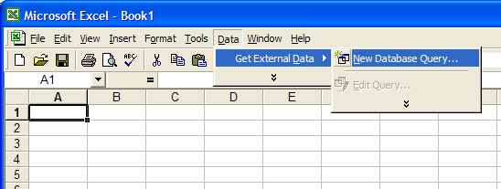
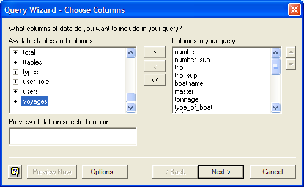
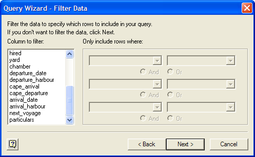
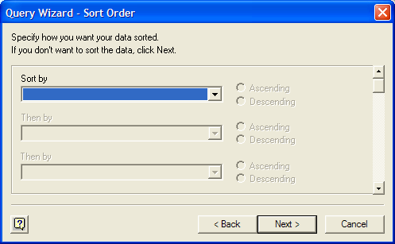
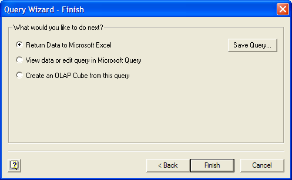

Start up the MonetDB SQL Server and Excel.
In Excel, select from the drop down menu, first Data, then Get External Data, and finally New Database Query...
If MonetDB was installed correctly, there should be an entry MonetDB in the dialog box that opens. Select it and click on OK

In the wizard that opens, scroll down in the list on the left hand side and select voyages. Then click on the button labeled > and then on Next >.
In the next page of the wizard, click on Next >.
In the next page of the wizard, click on Next >.
In the final page of the wizard, click on Finish.
A new dialog window opens. Click on OK to insert the data into the current Excel worksheet.

That's all.